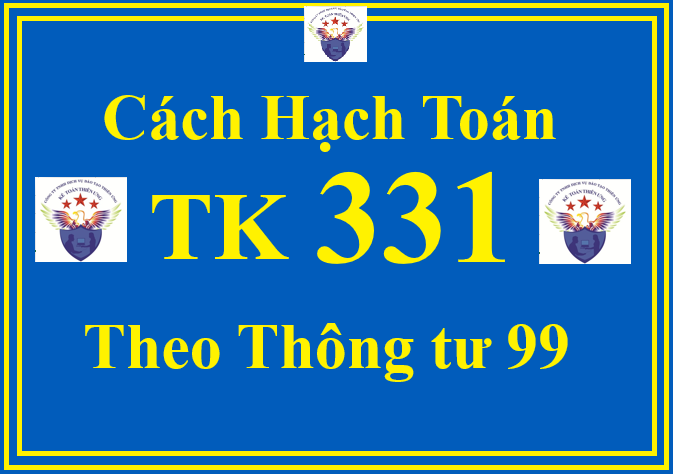

Hướng dẫn cách định khoản hạch toán TK 331 - Phải trả cho người bán theo Thông tư 99/2025/TT-BTC hướng dẫn Chế độ kế toán doanh nghiệp (áp dụng từ ngày 01/01/2026, thay thế Thông tư 200)
Theo Thông tư 99/2025/TT-BTC thì:
Tài khoản 331 dùng để phản ánh giá trị hiện có và tình hình thanh toán các khoản nợ phải trả của doanh nghiệp cho người bán vật tư, hàng hóa, người cung cấp dịch vụ, người bán TSCĐ, BĐSĐT, các khoản đầu tư tài chính theo hợp đồng kinh tế đã ký kết. Tài khoản này cũng được dùng để phản ánh tình hình thanh toán về các khoản nợ phải trả cho người nhận thầu xây lắp chính, phụ.
Nợ phải trả cho người bán, người cung cấp, người nhận thầu xây lắp cần được hạch toán chi tiết cho từng đối tượng phải trả. Trong chi tiết từng đối tượng phải trả, tài khoản này phản ánh cả số tiền đã ứng trước cho người bán, người cung cấp, người nhận thầu xây lắp nhưng chưa nhận được sản phẩm, hàng hóa, dịch vụ, khối lượng xây lắp hoàn thành bàn giao.
Bên giao nhập khẩu ủy thác ghi nhận trên tài khoản này số tiền phải trả người bán về hàng nhập khẩu thông qua bên nhận nhập khẩu ủy thác như khoản phải trả người bán thông thường.
Khi hạch toán chi tiết các khoản phải trả người bán, doanh nghiệp phải hạch toán rõ ràng, rành mạch các khoản chiết khấu thanh toán, chiết khấu thương mại, giảm giá hàng bán của người bán, người cung cấp nếu chưa được phản ánh trong hóa đơn mua hàng.
1. Kết cấu và nội dung phản ánh của Tài khoản 331 - Phải trả cho người bán Theo Thông tư 99/2025/TT-BTC
| Bên Nợ: | Bên Có: |
|
- Số tiền đã trả nợ cho người bán vật tư, hàng hóa, người cung cấp dịch vụ, người nhận thầu xây lắp;
- Số tiền ứng trước cho người bán, người cung cấp, người nhận thầu xây lắp nhưng chưa nhận được vật tư, hàng hóa, dịch vụ, khối lượng sản phẩm xây lắp hoàn thành bàn giao;
- Số tiền người bán chấp thuận giảm giá hàng hóa hoặc dịch vụ đã giao theo hợp đồng;
- Chiết khấu thanh toán và chiết khấu thương mại được người bán chấp thuận cho doanh nghiệp giảm trừ vào khoản nợ phải trả cho người bán;
- Giá trị vật tư, hàng hóa thiếu hụt, kém phẩm chất khi kiểm nhận và trả lại người bán;
- Đánh giá lại các khoản phải trả cho người bán bằng ngoại tệ (trường hợp tỷ giá ngoại tệ giảm so với đơn vị tiền tệ trong kế toán).
|
- Số tiền phải trả cho người bán vật tư, hàng hóa, người cung cấp dịch vụ và người nhận thầu xây lắp;
- Điều chỉnh số chênh lệch giữa giá tạm tính nhỏ hơn giá thực tế của số vật tư, hàng hóa, dịch vụ đã nhận;
- Đánh giá lại các khoản phải trả cho người bán bằng ngoại tệ (trường hợp tỷ giá ngoại tệ tăng so với đơn vị tiền tệ trong kế toán).
|
|
Tài khoản này có thể có số dư bên Nợ. Số dư bên Nợ (nếu có) phản ánh số tiền đã ứng trước cho người bán hoặc số tiền đã trả nhiều hơn số phải trả cho người bán theo chi tiết của từng đối tượng cụ thể. Khi lập Báo cáo tình hình tài chính, phải lấy số dư chi tiết của từng đối tượng phản ánh ở tài khoản này để ghi vào 2 chỉ tiêu bên “Tài sản” và bên “Nguồn vốn”. |
Số dư bên Có:
Số tiền còn phải trả cho người bán, người cung cấp, người nhận thầu xây lắp tại thời điểm kết thúc kỳ kế toán.
|
2. Cách định khoản hạch toán TK 331 - Phải trả cho người bán theo Thông tư 99/2025/TT-BTC
2.1. Mua vật tư, hàng hóa về nhập kho hoặc mua TSCĐ về dùng ngay,... chưa trả tiền cho người bán:
a) Trường hợp mua trong nội địa, ghi:
- Nếu thuế GTGT đầu vào được khấu trừ, ghi:
Nợ các TK 152, 153, 156, 157, 211, 213,... (giá chưa có thuế GTGT)
Nợ TK 133 - Thuế GTGT được khấu trừ (1331)
Có TK 331 - Phải trả cho người bán (tổng giá thanh toán).
- Trường hợp thuế GTGT đầu vào không được khấu trừ thì giá trị vật tư, hàng hóa, TSCĐ bao gồm cả thuế GTGT (tổng giá thanh toán).
b) Trường hợp nhập khẩu, ghi:
- Phản ánh giá trị hàng nhập khẩu bao gồm cả thuế TTĐB, thuế BVMT (nếu có), ghi:
Nợ các TK 152, 153, 156, 157, 211, 213,...
Có TK 331 - Phải trả cho người bán
Có TK 3332 - Thuế TTĐB (nếu có)
Có TK 3333 - Thuế xuất, nhập khẩu (chi tiết thuế nhập khẩu, nếu có)
Có TK 33381 - Thuế bảo vệ môi trường (nếu có).
- Trường hợp thuế GTGT hàng nhập khẩu phải nộp được khấu trừ, ghi:
Nợ TK 133 - Thuế GTGT được khấu trừ
Có TK 3331 - Thuế GTGT phải nộp (33312).
- Trường hợp thuế GTGT hàng nhập khẩu phải nộp không được khấu trừ phải tính vào giá trị vật tư, hàng hóa, TSCĐ nhập khẩu, ghi:
Nợ các TK 152, 153, 156, 211,...
Có TK 3331 - Thuế GTGT phải nộp (33312).
2.2. Trường hợp doanh nghiệp thực hiện đầu tư XDCB theo phương thức giao thầu, khi nhận khối lượng xây lắp hoàn thành bàn giao của bên nhận thầu xây lắp, căn cứ hợp đồng giao thầu và biên bản bàn giao khối lượng xây lắp, hóa đơn khối lượng xây lắp hoàn thành:
- Nếu thuế GTGT đầu vào được khấu trừ, ghi:
Nợ TK 241 - XDCB dở dang (giá chưa có thuế GTGT)
Nợ TK 133 - Thuế GTGT được khấu trừ
Có TK 331 - Phải trả cho người bán (tổng giá thanh toán).
- Trường hợp thuế GTGT đầu vào không được khấu trừ thì giá trị đầu tư XDCB bao gồm cả thuế GTGT (tổng giá thanh toán).
2.3. Khi ứng trước tiền hoặc thanh toán số tiền phải trả cho người bán vật tư, hàng hóa, người cung cấp dịch vụ, người nhận thầu xây lắp, ghi:
Nợ TK 331 - Phải trả cho người bán
Có các TK 111, 112, 341,...
2.4. Khi nhận lại tiền do người bán hoàn lại số tiền đã ứng trước vì không cung cấp được hàng hóa, dịch vụ, ghi:
Nợ các TK 111, 112,...
Có TK 331 - Phải trả cho người bán.
2.5. Nhận dịch vụ được cung cấp (vận chuyển hàng hóa, điện, nước, điện thoại, kiểm toán, tư vấn, quảng cáo, dịch vụ khác) của người bán:
Nợ các TK 241, 242, 627, 641, 642,...
Nợ TK 133 - Thuế GTGT được khấu trừ (1331) (nếu có)
Có TK 331 - Phải trả cho người bán (tổng giá thanh toán).
2.6. Chiết khấu thanh toán doanh nghiệp được hưởng khi mua vật tư, hàng hóa do thanh toán trước thời hạn được trừ vào khoản nợ phải trả người bán, người cung cấp, ghi:
Nợ TK 331 - Phải trả cho người bán
Có TK 515 - Doanh thu hoạt động tài chính.
2.7. Trường hợp vật tư, hàng hóa mua vào phải trả lại hoặc được người bán chấp thuận giảm giá do không đúng quy cách, phẩm chất được tính trừ vào khoản nợ phải trả cho người bán, ghi:
Nợ TK 331 - Phải trả cho người bán
Có TK 133 - Thuế GTGT được khấu trừ (1331) (nếu có)
Có các TK 152, 153, 156,...
2.8. Trường hợp các khoản nợ phải trả cho người bán không xác định được chủ nợ hoặc đã xác định được là không phải trả nợ và được xử lý ghi tăng thu nhập khác của doanh nghiệp, ghi:
Nợ TK 331 - Phải trả cho người bán
Có TK 711 - Thu nhập khác.
2.9. Đối với nhà thầu chính, khi xác định giá trị khối lượng xây lắp phải trả cho nhà thầu phụ theo hợp đồng kinh tế đã ký kết, căn cứ vào hóa đơn, phiếu giá công trình, biên bản nghiệm thu khối lượng xây lắp hoàn thành và hợp đồng giao thầu phụ, ghi:
Nợ TK 632 - Giá vốn hàng bán (giá chưa có thuế GTGT)
Nợ TK 133 - Thuế GTGT được khấu trừ (1331)
Có TK 331 - Phải trả cho người bán.
2.10. Trường hợp doanh nghiệp nhận bán hàng đại lý để hưởng hoa hồng.
- Khi nhận hàng bán đại lý, doanh nghiệp theo dõi và ghi chép thông tin về hàng nhận bán đại lý để trình bày trong thuyết minh Báo cáo tài chính.
- Khi bán hàng nhận đại lý, ghi:

Nợ các TK 111, 112, 131,... (tổng giá thanh toán)
Có TK 331 - Phải trả cho người bán.
Đồng thời doanh nghiệp theo dõi và ghi chép thông tin về hàng nhận bán đại lý đã xuất bán để trình bày trong thuyết minh Báo cáo tài chính.
- Khi xác định hoa hồng đại lý được hưởng, tính vào doanh thu hoa hồng về bán hàng đại lý, ghi:
Nợ TK 331 - Phải trả cho người bán
Có TK 511 - Doanh thu bán hàng và cung cấp dịch vụ
Có TK 3331 - Thuế GTGT phải nộp (nếu có).
- Khi thanh toán tiền cho bên giao hàng đại lý, ghi:
Nợ TK 331 - Phải trả cho người bán
Có các TK 111, 112,...
2.11. Kế toán khoản phải trả cho người bán tại đơn vị giao ủy thác nhập khẩu:
- Khi trả trước một khoản tiền ủy thác mua hàng theo hợp đồng ủy thác nhập khẩu cho đơn vị nhận ủy thác nhập khẩu mở LC,... căn cứ các chứng từ liên quan, ghi:
Nợ TK 331 - Phải trả cho người bán (chi tiết cho từng đơn vị nhận ủy thác)
Có các TK 111, 112, 341,...
- Khi nhận hàng ủy thác nhập khẩu do bên nhận ủy thác giao trả, doanh nghiệp thực hiện như đối với hàng nhập khẩu thông thường.
- Khi trả tiền cho đơn vị nhận ủy thác nhập khẩu về số tiền hàng nhập khẩu và các chi phí liên quan trực tiếp đến hàng nhập khẩu, căn cứ các chứng từ liên quan, ghi:
Nợ TK 331 - Phải trả cho người bán (chi tiết cho từng đơn vị nhận ủy thác)
Có các TK 111, 112,...
- Phí ủy thác nhập khẩu phải trả đơn vị nhận ủy thác được tính vào giá trị hàng nhập khẩu, căn cứ các chứng từ liên quan, ghi:
Nợ các TK 151, 152, 156, 211,...
Nợ TK 133 - Thuế GTGT được khấu trừ
Có TK 331- Phải trả cho người bán (chi tiết từng đơn vị nhận ủy thác).
- Việc thanh toán nghĩa vụ thuế đối với hàng nhập khẩu thực hiện theo quy định của Tài khoản 333 - Thuế và các khoản phải nộp Nhà nước.
- Đơn vị nhận ủy thác không sử dụng tài khoản này để phản ánh các nghiệp vụ thanh toán ủy thác mà phản ánh qua các Tài khoản 138 - Phải thu khác và Tài khoản 338 - Phải trả, phải nộp khác.